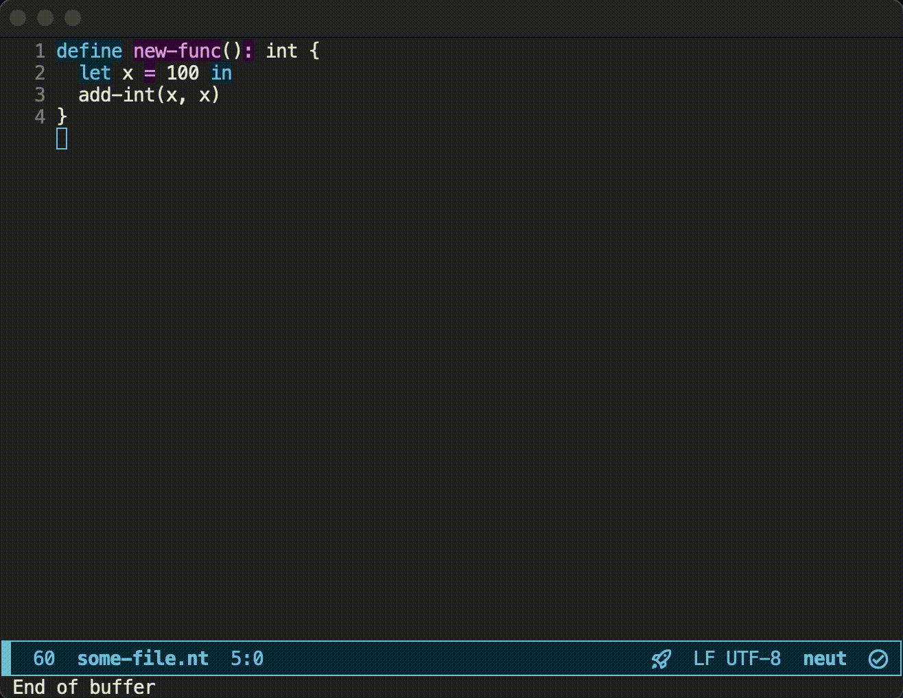

Rapid Prototyping
You can use the subcommand neut zen to sketch a function.
Below is an example in which Emacs runs neut zen path/to/file.nt when C-c C-c is typed:

This feels a bit like a scripting language, doesn't it?
Notes for Emacs
The configuration for Emacs in the above example is like the one below:
(defun ext/neut-compile ()
(interactive)
(compile (concat "neut zen " (buffer-file-name))))
(bind-key "C-c C-c" 'ext/neut-compile 'neut-mode-map)
The above example also uses the package fancy-compilation:
(use-package fancy-compilation
:init
(fancy-compilation-mode t)
(setq compilation-error-regexp-alist nil)
(setq compilation-highlight-regexp nil)
(setq compilation-mode-font-lock-keywords nil)
(setq fancy-compilation-quiet-prelude t))